Sistema de Gestión de Inventario con IA para Kits de Robótica
Proyecto II
Un kit ordenado pierde trazabilidad cuando vuelve mezclado
El orden ideal existe, pero clasificar, contar y verificar faltantes sigue dependiendo de una tarea manual.
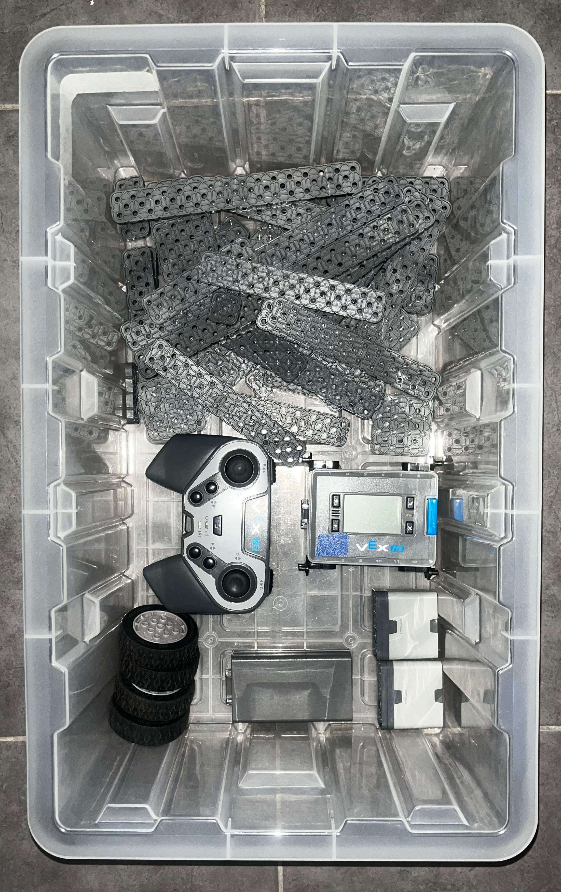
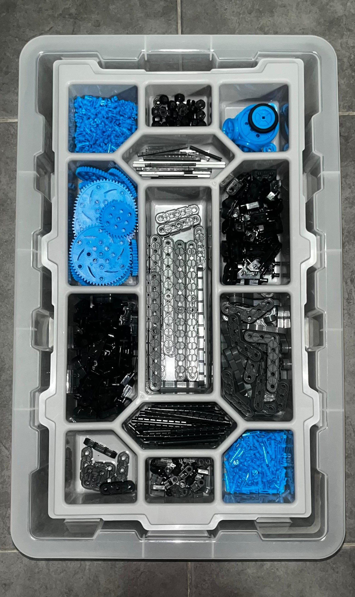
La clasificación automática ya es una familia de soluciones reales
El proyecto toma esa lógica general —transportar, detectar, decidir y separar— y la adapta a piezas de kits educativos.
Adaptar esa lógica al inventariado de kits educativos
El objetivo fue construir una versión compacta que transporte piezas, las reconozca, las manipule y actualice un registro digital.
El prototipo integra transporte, visión, manipulación e inventario
Antes de separar el sistema en bloques, esta es la solución final montada y validada.
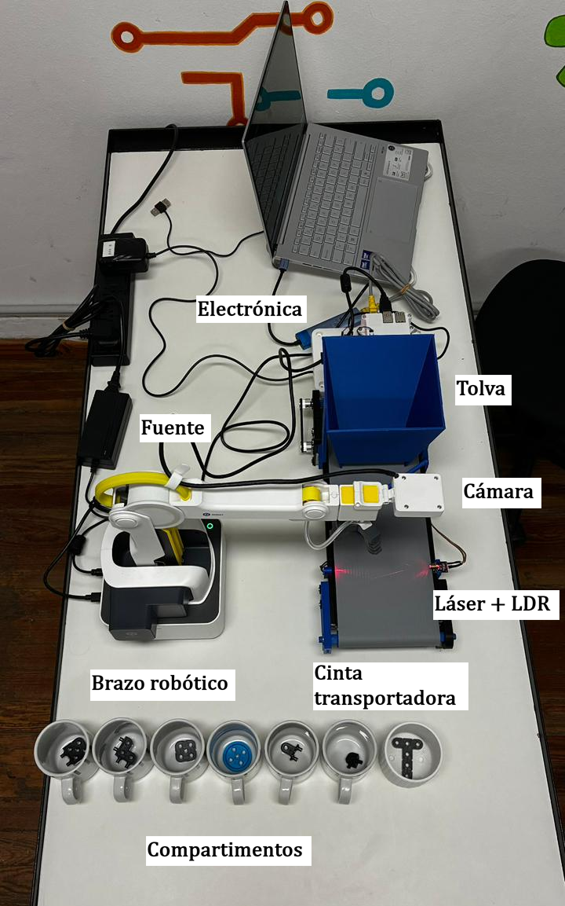
El sistema se organiza como un proceso integrado
La imagen resume el flujo final del prototipo: ingreso, detección, decisión, manipulación y registro.
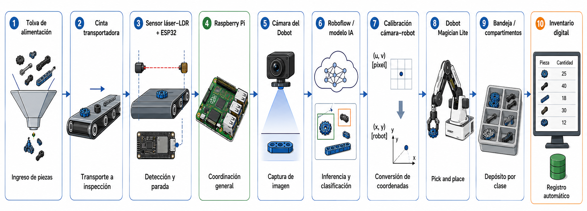
La alimentación y transporte posicionan la pieza para inspección
Se diseñó y ajustó una cinta compacta con tolva y guías para llevar las piezas hacia la zona de captura.
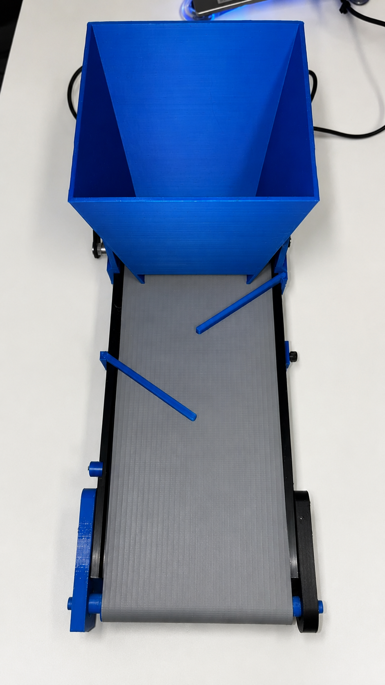
El control local convierte la cinta en un subsistema sincronizado
La electrónica acciona el transporte, interpreta el evento de detección y coordina el avance con el resto del sistema.
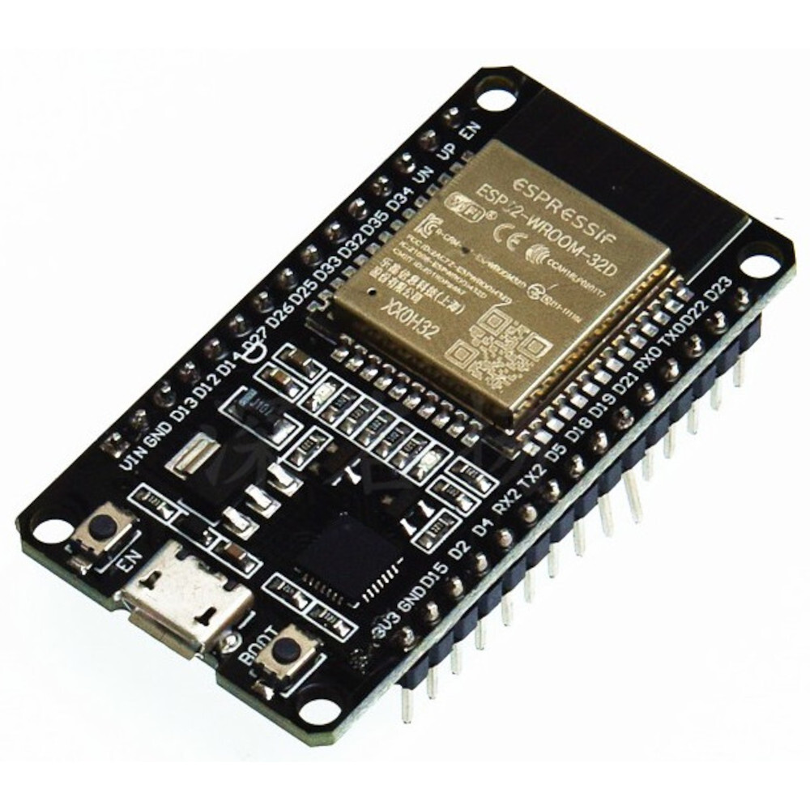
ESP32 Control local de marcha, parada y reinicio.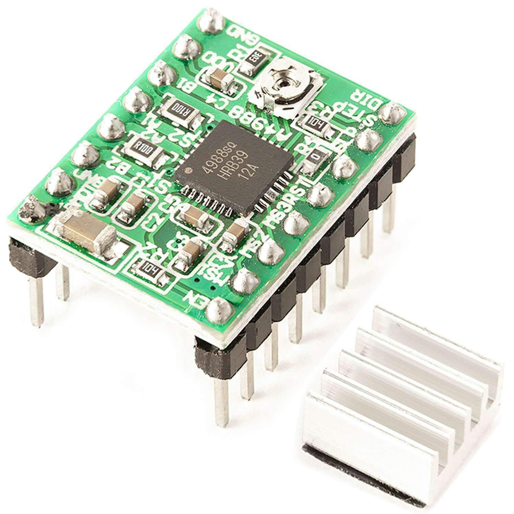
A4988 Driver entre la lógica y el motor paso a paso.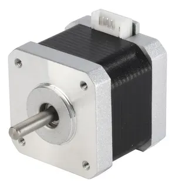
NEMA 17 Accionamiento mecánico de la cinta.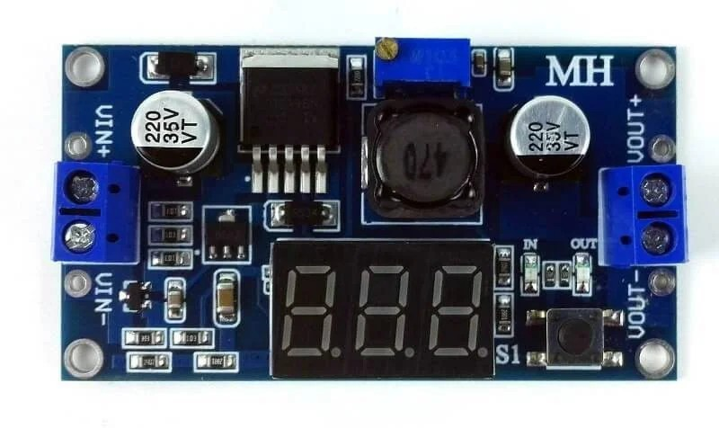
LM2596 Adaptación de alimentación para lógica y sensores.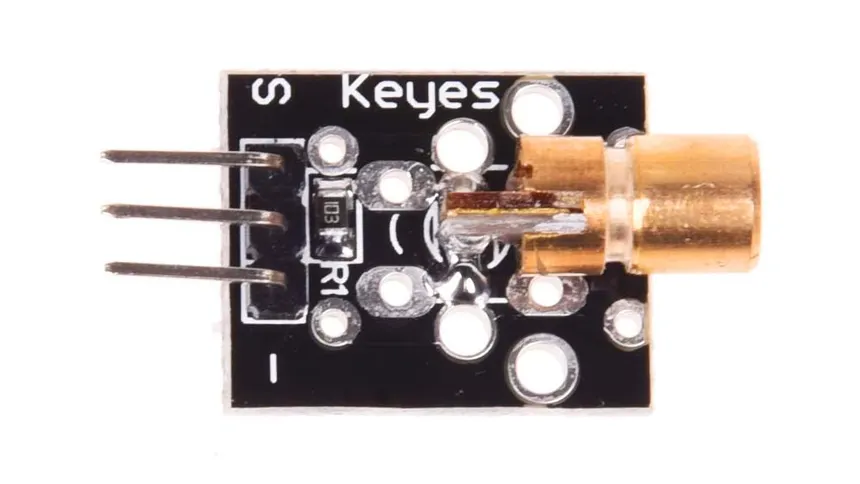
KY-008 Haz de referencia sobre la zona de inspección.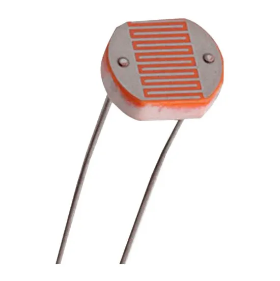
LDR Lectura del corte del haz por presencia de pieza.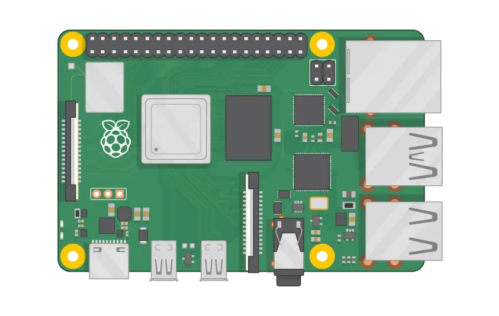
GPIO
La barrera láser-LDR sincroniza la cinta con la inspección
El sensado detecta cuándo una pieza llega a la zona de captura y permite detener el transporte para continuar el ciclo automático.
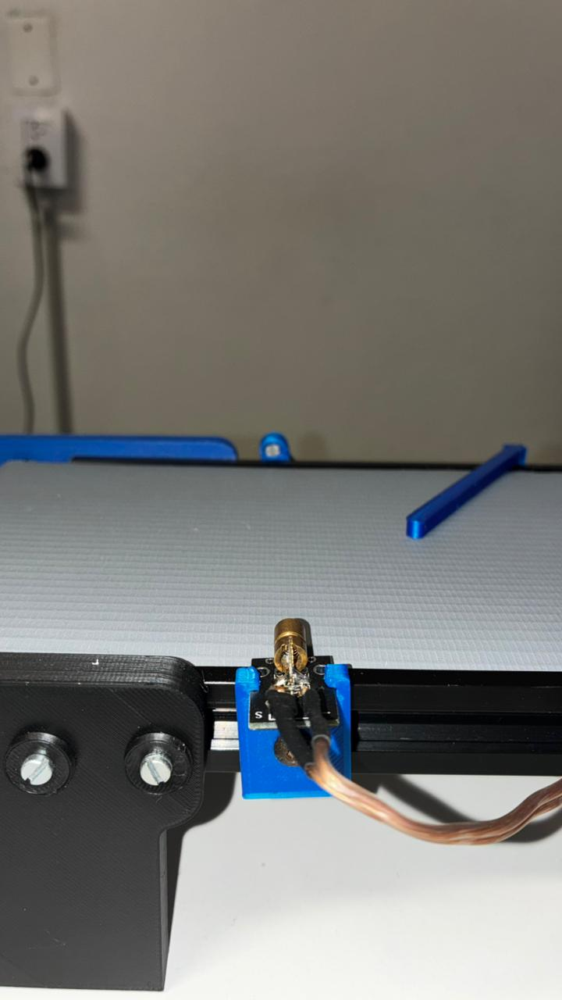
La Raspberry Pi integra visión, decisión, robot e inventario
En este bloque se concentra la lógica de alto nivel del prototipo: tomar datos del sistema, decidir qué pieza se detectó y ordenar las acciones siguientes.
Entradas
- Estado del sensado.
- Imagen de la zona de inspección.
- Parámetros de calibración.
Proceso
- Captura y preparación de imagen.
- Inferencia del modelo de visión.
- Selección de clase y punto de toma.
Salidas
- Comando de movimiento al Dobot.
- Destino de depósito según clase.
- Actualización del inventario digital.
El modelo detecta piezas reales sobre la cinta
La visión artificial se entrenó con imágenes del montaje físico, para reconocer piezas del kit en condiciones cercanas al ciclo automático.
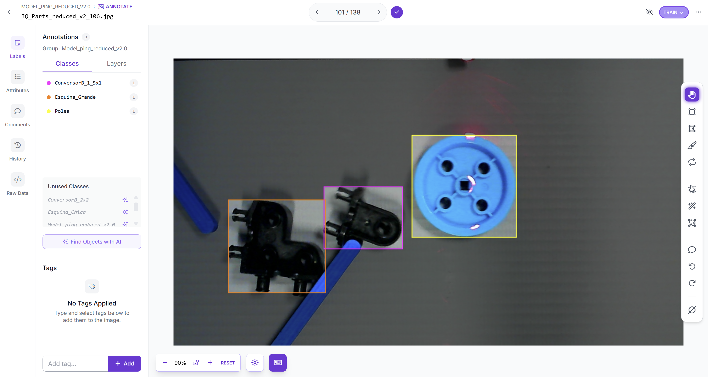
La predicción define qué pieza se toma y a qué depósito va
Una vez entrenado el modelo, la red devuelve una predicción sobre la imagen capturada: clase detectada, región de la pieza y confianza asociada.
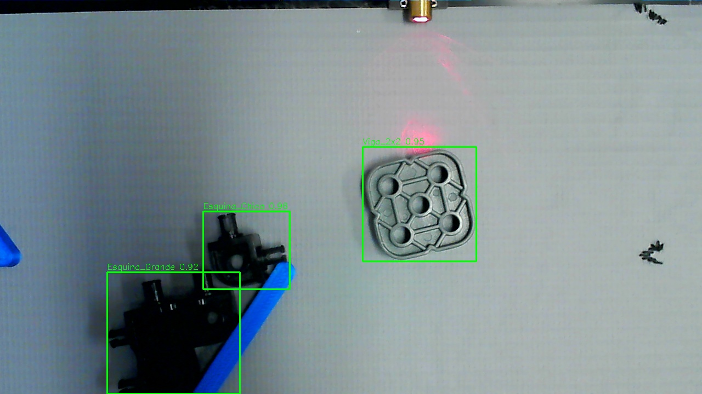
La detección en píxeles se transforma en una posición de toma
Para que el Dobot pueda actuar sobre una pieza detectada, el centro de la caja en imagen debe convertirse al sistema de coordenadas físico del robot.
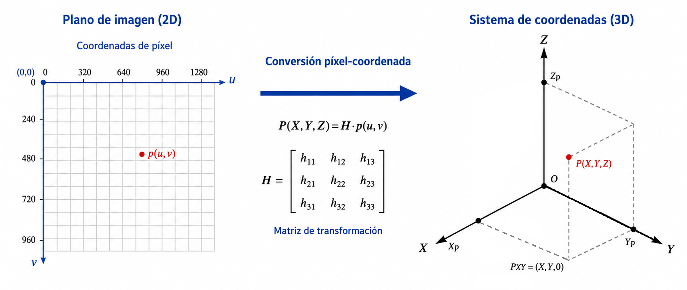
La homografía relaciona el plano de la cámara con el plano de trabajo. La altura de toma se mantiene fija como parámetro operativo del robot.
El Dobot ejecuta la toma y el depósito según la clase detectada
Después de convertir la detección a coordenadas físicas, el robot realiza la maniobra de pick and place y deposita la pieza en el sector correspondiente.
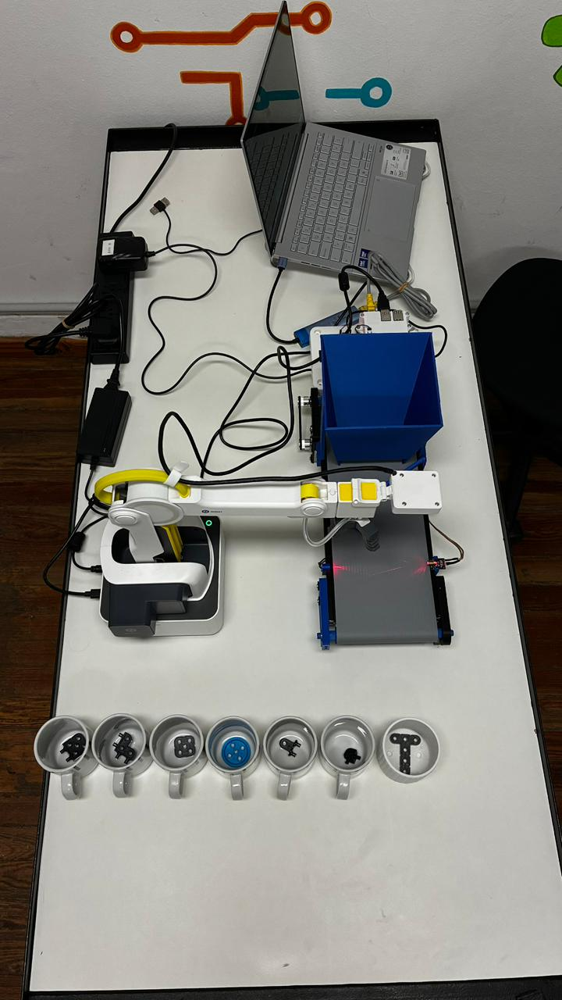
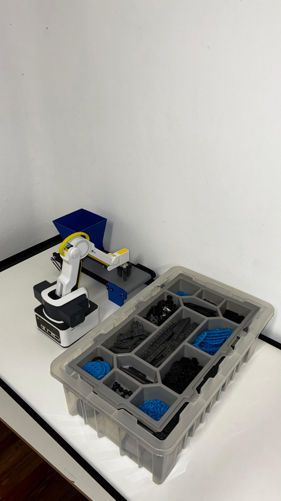
El ciclo se cierra actualizando el conteo de piezas
Luego del depósito, el software registra la clase manipulada y actualiza un archivo de inventario para mantener trazabilidad del kit.
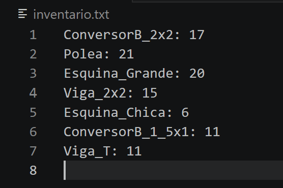
Los bloques se encadenan en una secuencia única de operación
El prototipo combina transporte, sensado, visión artificial, manipulación robótica e inventario en un ciclo funcional completo.
La validación avanzó desde pruebas por bloque hasta corrida integral
Antes de medir resultados, cada subsistema se probó por separado y luego se integró en una ejecución automática supervisada.
El prototipo validó la integración con resultados cuantificables
Los resultados combinan el desempeño del modelo de visión con la validación funcional del sistema físico completo.
Se construyó una base funcional para automatizar inventario de kits
El trabajo demostró la viabilidad de integrar transporte, sensado, visión artificial, manipulación robótica e inventario digital en un prototipo operativo.
Qué quedó validado
- Arquitectura completa por bloques funcionando en conjunto.
- Clasificación de piezas reales con modelo entrenado sobre el montaje final.
- Ciclo automático con toma, depósito y actualización de inventario.
Próximas mejoras
- Alimentación individual para reducir agrupamientos.
- Mejoras en agarre y punto efectivo de toma.
- Inferencia local y ampliación del conjunto de clases.
- Interfaz gráfica y gestión avanzada.
Muchas gracias
por su atención